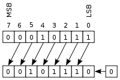

Operação de Bitwise Shift
Em um deslocamento aritmético, os bits que são deslocados para fora de cada extremidade são descartados.
Em um deslocamento aritmético à esquerda, zeros são deslocados à direita como demonstra a imagem:
Exemplo:
00010111 (decimal +23) LEFT-SHIFT
= 00101110 (decimal +46)
Em um deslocamento aritmético para a direita, o bit de sinal é deslocado da esquerda, preservando, assim, o sinal do operando como demonstra a imagem:

Exemplo:
10010111 (decimal -105) RIGHT-SHIFT
= 11001011 (decimal -53)
Tabela de compatibilidade de tipos da operação de Bitwise SHIFT
| Operando Esquerdo | Operando Direito | Tipo Resultado | Exemplo | Resultado |
| inteiro | inteiro | inteiro | 12 >> 2 | 3 |
| inteiro | inteiro | inteiro | 12 << 2 | 48 |